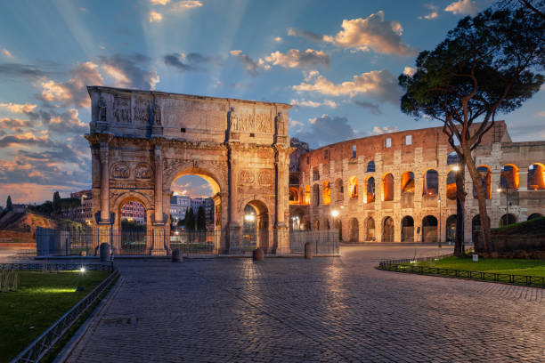

Coliseu - Itália
Arena foi palco de diversas formas de entretenimento. Sua construção realizada no ano 72 d.c. por ordem do imperador Fábio Vespasiano, é o maior e mais famoso símbolo do Império Romano. Para saber mais clique aqui
Torre Eifel - França

Construída entre 1887 e 1889 para a Exposição Universal, que aconteceu em Paris no centenário da Revolução Francesa. O monumento deveria ter sido desfeito 20 anos após a sua abertura, mas isso não aconteceu. E hoje é um dos pontos turísticos mais visitados da Europa. Veja aqui sobre mais
Museu do Louvre - França

Inaugurado em 1793 como símbolo da República após Revolução Francesa. São 6 hectares de área e 8,9 milhões de visitas só em 2023, é o museu mais visitado do mundo. Conheça aqui mais sobre esse lugar cheio de história e cultura.